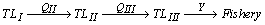
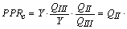
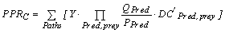
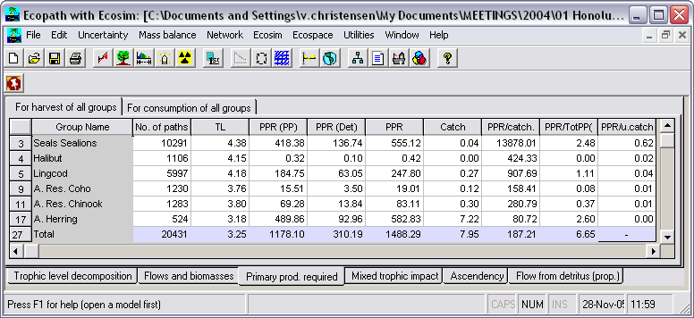

For terrestrial systems, it has been shown by Vitousek et al. (1986), based on a detailed analysis of agriculture, industry and other activities, that nearly 40% of potential net primary production is used directly or indirectly by these activities. Comparable estimates for aquatic systems were not available until recently, though a rough estimate, of 2% was presented in the same publication. This figure, much lower than that for terrestrial systems, was based on the assumptions that an ‘average fish’ feeds two trophic levels above the primary producers, and has been since revised upward (Pauly and Christensen, 1995).
The crudeness of Vitousek et al.’s approach for the aquatic systems was due mainly to lack of information on marine food webs, especially on the trophic positions of the various organisms harvested by humans. Models of trophic interactions may however help overcome this situation, and an alternative approach, based on network analysis, may be suggested for quantification of the primary productivity required to sustain harvest by humans (or by analogy by any other group that extracts production from an ecosystem).
To estimate the primary production required (PPR, Christensen and Pauly, 1993a) to sustain the catches and the consumption by the trophic groups in an ecosystem, the following procedure has been implemented in Ecopath: First, all cycles are removed from the diet compositions, and all paths in the flow network are identified using the method suggested by Ulanowicz (1995). For each path, the flows are then raised to primary production equivalents using the product of the catch, the consumption/production ratio of each path element times the proportion the next element of the path contributes to the diet of the given path element. For a simple path from trophic level (TL) I (primary producers and detritus), over TL II and III, and on to the fishery,

the primary production (or detritus) equivalents, PPR, corresponding to the catch of Y is:

For the general (and more realistic) case where the pathways includes branching the PPR corresponding to a catch Y of a given group can be quantified by summing over all pathways leading to the given group the PPR’s

Eq. 44where P is production, Q consumption, and DC’ is the diet composition for each predator/prey constellation in each path (with cycles removed from the diet compositions).
The PPR required to sustain the catch is presented as a page on the PPR form.
Further, the PPR for sustaining the consumption of each trophic group in a system can be estimated from the same equation as above by substituting the catch, Y, with the production term, P, calculated as the production/biomass ration, P/B, times the biomass, B. This is presented on a separate page on the PPR form.
PPR should actually be interpreted as flow from Trophic Level I as it includes primary production as well as detritus uptake. The denominator, PP, thus actually includes all ‘new’ flow to the detritus groups, i.e. flow from primary producers and import of detritus.
The PPR is closely related to the emergy concept of H. T. Odum (1988), and is proportional to the ecological footprint of Wackernagel and Rees (1996).

FIGURE 7.7 Primary production required (PPR) to sustain the fishery, calculated based on all food pathways in the system. In this system the fishery is appropriating 6.65% of the primary production, all indirectly.